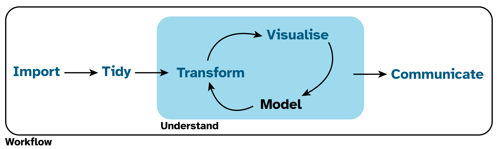
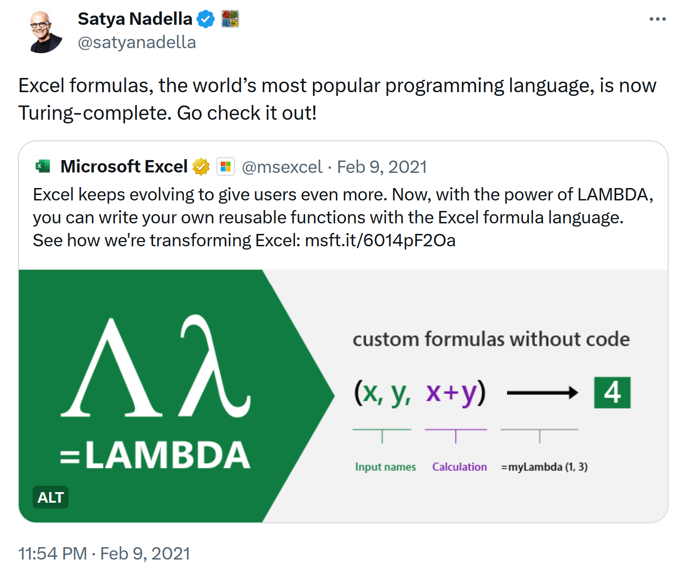
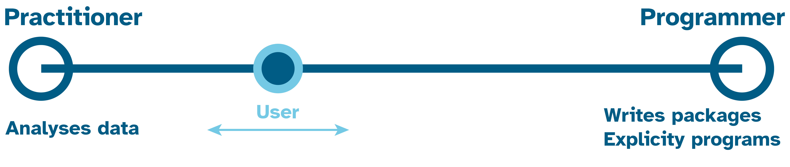

 Tidy -> Understand (which has the phases Transform -> Visualize -> Model in a cycle) -> Communicate. Surrounding all of these is Workflow Import, Tidy, Transform, and Visualise are highlighted." width="2461">
1 Setting the scene
1.1 The challenge
New often means difficult, but difficult things are also often worth doing. The quote in Note 1.1 pretty much captures my feelings about the challenge of getting started and learning R:
1.1.1 But why is it worth doing?
- Maybe it isn’t, but experience is one way to find out.
- My experience is that in the long term, it saves me time and frees up time from doing boring repetitive tasks for doing more interesting and more complex things.
1.1.2 What are we doing?
Figure 1.1 shows a version of the data science cycle from R4DS. Conceptually, this is what we are mostly doing. In R4DS, all of these steps are done programmatically, but we won’t be trying to do everything here.
Modeling is beyond our scope here, but you may wish to explore the modeling part of the cycle yourself. For example, check out Tidy Modeling with R.
As a librarian, your data is likely to be in a spreadsheet. We need to learn how to import that data into an environment where we can work with it and explore questions.
In asking and answering those questions we need to learn to transform data and/or visualise our data.
We then need to communicate our findings back out of our working environment to our colleagues or for our own records.
1.1.3 How are we going to do it?
As per Note 1.1, step-by-step and through practice we will learn to think and work in a certain way that may be different to how you have previously worked.
It may seem all a bit abstract to begin with, but that is part of the point. In learning to generalise from abstractions, one can identify and apply the same concepts to lots of specific problems that may at first seem different, but are either the same or similar.
Our guiding principles in doing this are:
- Keep the raw data raw.
- Write love letters to our future selves in the form of our code and how we organise and document our data.
1.2 If you’re using Excel you are already programming
In 2021 Excel became Turing-complete (Figure 1.2), which is a colloquial way of saying one computing language can approximate another computing language.
In other words, anything one can do in Python, R, C++ and so on, should also be possible in Excel.
Hence if you are using Excel, you are already a programmer.

Gordon Shotwell wrote a blog post called R for Excel Users that discusses the differences between Excel and R. Perhaps the biggest conceptual difference is that in Excel one is programming with the raw data - which conflicts with the guiding principles of keeping the raw data separate from the code (Section 1.1.3).
With most languages, the file(s) holding the data are separate from the file(s) that contains the code.
On the one hand programming with the raw data makes it easy to get started in Excel, but on the other hand it gets harder as the complexity of what you are trying to do increases.
And vice versa.
In other languages getting started is harder, but it’s easier to do more complex tasks once some initial learning is done.
It’s really a question of whether it’s worth the investment learning R, python etc. Hence my comments in Section 1.1.1.
1.3 A little goes a long way
When considering investing in learning, it’s important to know that we don’t need to learn everything. A modest investment does yield large rewards.
A few hours learning, backed-up with practice can be enough for many people.
As illustrated in Figure 1.3 there are a whole spectrum of users from practitioners at one end who are focused on applying some programming tools to their specific problems. Whilst at the other end who develop the programming tools and language itself.
In reality one may move around on that spectrum as ones needs and interests change over time.
